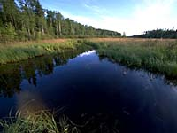

Fish Information
Habitat
Commercial Fisheries
Sport Fishing
Record Catches
Activities
Quizzes
Glossary
|
|
Saskatchewan's thousands of lakes and rivers are home to many species of aquatic life and provide some of the best freshwater sport fishing anywhere.
|
|
Saskatchewan Fisheries
 What makes this province a fishing vacationer's dream? A general introduction of Saskatchewan fisheries can be found here.
Fish Information What is a fish? Learn how fish have adapted to water, what makes up their anatomy and the types of fish that are found in the waters of Saskatchewan.
Clear, clean, cold water. A sign of good fish habitat or a signal that something is wrong? Find out the requirements of a waterbody that can support fish life.
Commercial fishing does take place in the middle of the prairies. In fact, fishing takes place year round. Some of the finest quality rainbow trout are raised on fish farms in this province. |
|
|